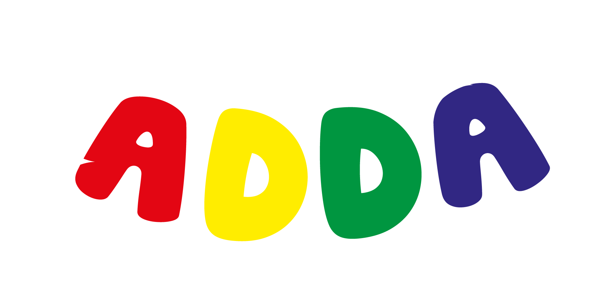
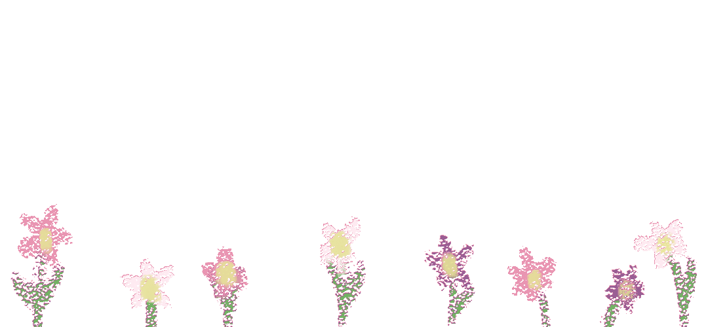
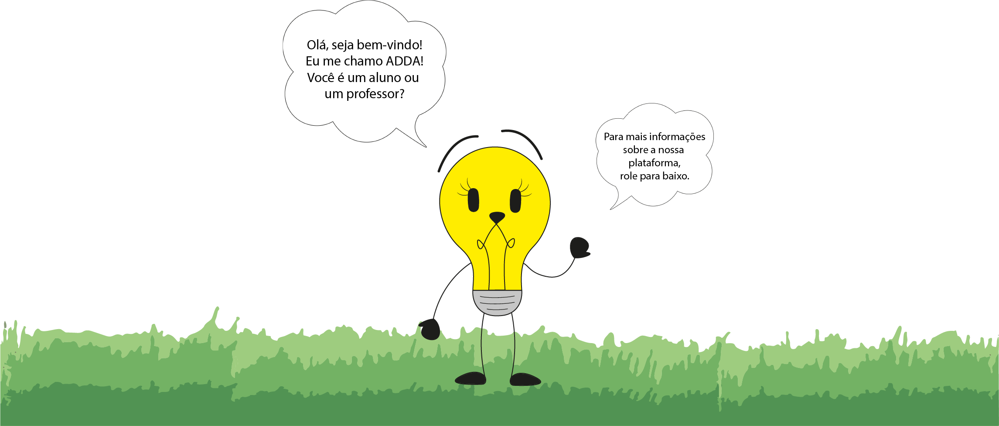
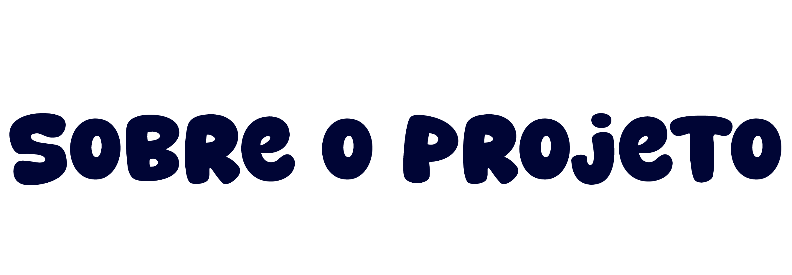
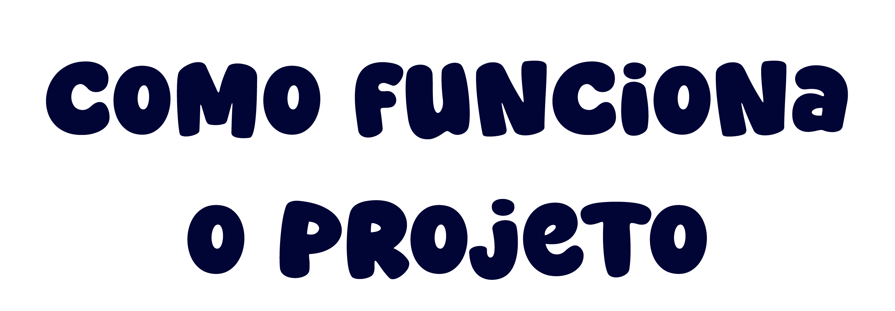
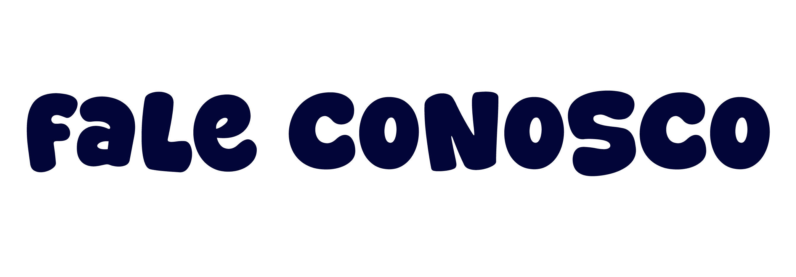

Aprender pode (e deve) ser divertido.
O ADDA é um projeto educacional
que apoia a alfabetização de alunos do 6º ano por meio de jogos,
aulas interativas e acompanhamento pedagógico.


O ADDA nasceu para apoiar alunos que, especialmente após a pandemia, enfrentam dificuldades na leitura e na escrita. Unimos educação, tecnologia e diversão para tornar o aprendizado mais acessível, interessante e eficaz.

O projeto é dividido em duas plataformas pensadas para públicos diferentes:
Um ambiente lúdico e interativo para aprender brincando.
Um espaço exclusivo para acompanhamento pedagógico.

Acompanhe o ADDA e fique por dentro das novidades.
📲 Instagram: @addaeducacaodivertida
📧 Atendimento online via redes sociais
Formulário para contato: